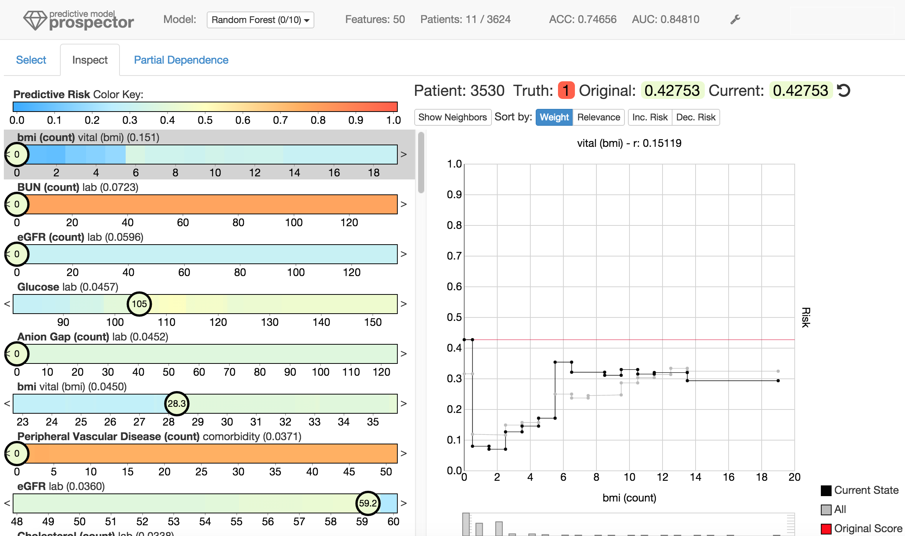

Understanding predictive models, in terms of interpreting and identifying actionable insights, is a challenging task. Often the importance of a feature in a model is only a rough estimate condensed into one number. However, our research goes beyond these naïve estimates through the design and implementation of an interactive visual analytics system, Prospector. By providing interactive partial dependence diagnostics, data scientists can understand how features affect the prediction overall. In addition, our support for localized inspection allows data scientists to understand how and why specific datapoints are predicted as they are, as well as support for tweaking feature values and seeing how the prediction responds. Our system is then evaluated using a case study involving a team of data scientists improving predictive models for detecting the onset of diabetes from electronic medical records.
@inproceedings{Krause:2016:IPV:2858036.2858529,
author = {Krause, Josua and Perer, Adam and Ng, Kenney},
title = {Interacting with Predictions: Visual Inspection of Black-box Machine Learning Models},
booktitle = {Proceedings of the 2016 CHI Conference on Human Factors in Computing Systems},
series = {CHI '16},
year = {2016},
isbn = {978-1-4503-3362-7},
location = {Santa Clara, California, USA},
pages = {5686--5697},
numpages = {12},
url = {http://doi.acm.org/10.1145/2858036.2858529},
doi = {10.1145/2858036.2858529},
acmid = {2858529},
publisher = {ACM},
address = {New York, NY, USA},
keywords = {interactive machine learning, partial dependence, predictive modeling}
}